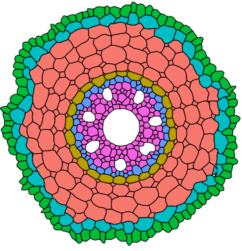

About us

MECHA was developed at the Université catholique de Louvain, in the Earth and Life Insititute, in the lab of Xavier Draye. The primary developpers of the model are Valentin Couvreur and Marc Faget.
MECHA what first used here:
Going with the flow. Multiscale insights into the composite nature of water transport in roots Valentin Couvreur, Marc Faget, Guillaume Lobet, Mathieu Javaux, François Chaumont and Xavier Draye
Plant Physiology, 2018
MECHA is released under a GPL licence, which means that redistribution and use in source and binary forms, with or without modification, are permitted under the GNU General Public License v3 and provided that the following conditions are met: 1. Redistributions of source code must retain the above copyright notice, this list of conditions and the following disclaimer. 2. Redistributions in binary form must reproduce the above copyright notice, this list of conditions and the following disclaimer in the documentation and/or other materials provided with the distribution. 3. Neither the name of the copyright holder nor the names of its contributors may be used to endorse or promote products derived from this software without specific prior written permission.
Source code on GitHub View paper